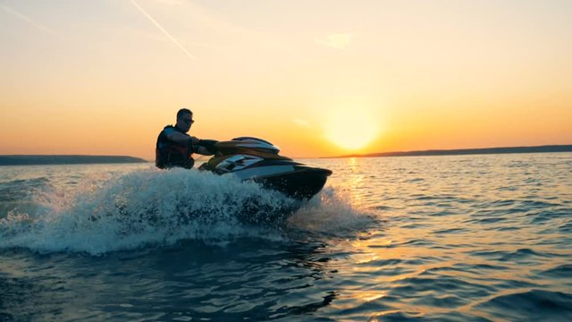
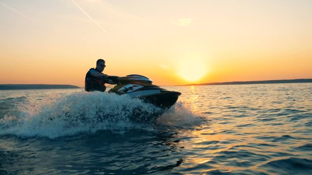
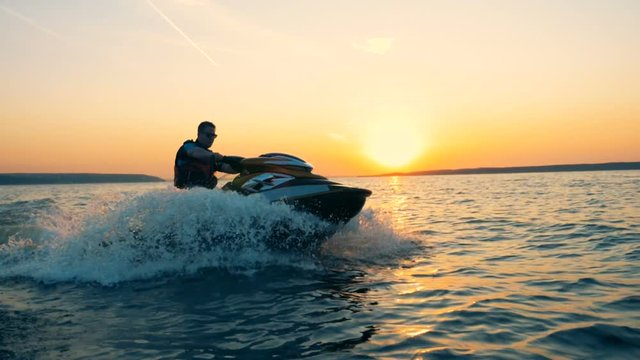
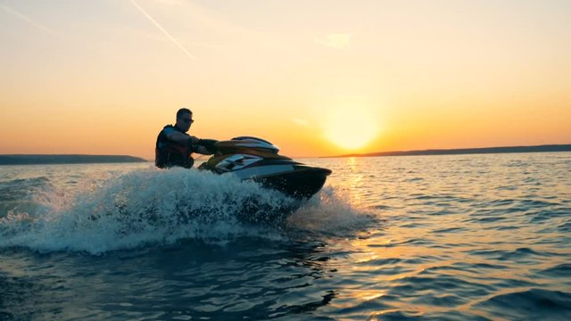

Sunset Watching: Cox's Bazar offers spectacular sunset views over the Bay of Bengal. Visitors can relax on the beach and watch as the sun sets below the horizon, painting the sky with vibrant colors.
Parasailing:Parasailing is another thrilling activity available in Cox's Bazar. Participants are towed behind a boat while attached to a parachute, allowing them to soar high above the water and enjoy panoramic views of the beach and surrounding area.
Jet Skiing: Jet skiing is a popular water sport in Cox's Bazar. Tourists can rent jet skis and enjoy riding the waves along the coastline, providing an exhilarating experience.